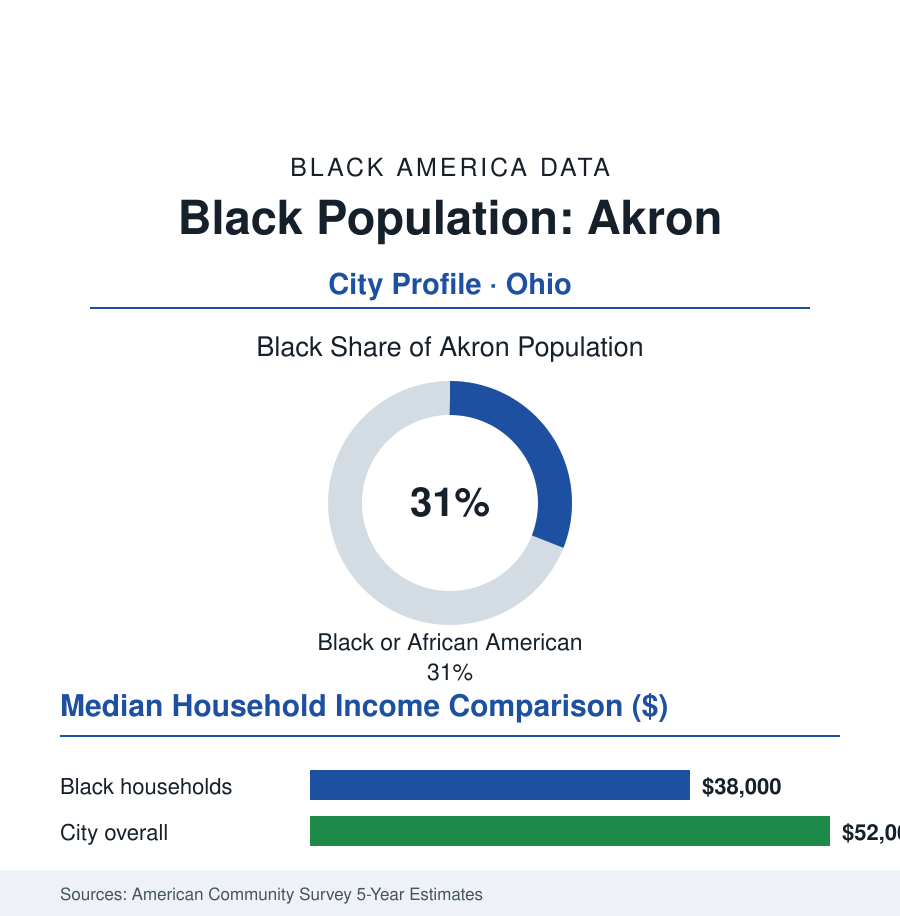

Black Cities
Black Akron: 59,000 People in the Rubber Capital
Akron's Black community, about 59,000 strong and 31% of the city, was built by the tire plants and carries one of Ohio's deepest Black civic records. The census portrait.

Akron's Black community numbers approximately 59,000 people — about 31% of the city's 190,000 residents — built in two great waves by the tire industry that made Akron the rubber capital of the world, and sustained through that industry's departure by one of the densest Black institutional landscapes in Ohio: a church and civic tradition anchored in the neighborhoods around the old plants, a public-school system the community substantially governs, and a hometown-son effect (the city's most famous native's foundation runs one of the nation's most-watched school experiments on the west side). This profile reads the Rubber City's numbers.
The Tire Plants and the Neighborhoods They Built
Akron's Black population arrived with rubber: Goodyear, Firestone, Goodrich, and General Tire made the city the fastest-growing in America in the 1910s, and Black Southerners — recruited and self-propelled — built communities around the East Akron plant gates and the South side, in the neighborhoods (the Lane-Wooster area, Elizabeth Park, the Arlington corridor) whose churches and businesses fill the archive. The industry's sociology is in the record: the tire builders' unions among the industrial labor movement's strongest locals (the United Rubber Workers founded here), their locals' integration battles part of the plants' data. The collapse came in the 1970s and 80s on the industry's schedule (production to the non-union South and overseas; the headquarters and the research wings remaining as the industry's white-collar remnant — Goodyear's and Goodyear-descended employment still anchoring the professional tier) and the community's economy re-based onto the successor stack: the hospital systems (Summa and Akron General — the metro's largest employers), the University of Akron, the public sector, and the polymer-and-materials niche the region's reinvention strategy built on the rubber inheritance.
Institutions: Churches, Schools, and the Hometown Experiment
The institutional record is the profile's spine: Black Akron's church tradition (congregations of statewide standing), its NAACP and Urban League chapters of the first rank, its Black political establishment (city council strength across the decades, the county and state delegations, the mayoral contests of the modern era run through the community's endorsements), and Akron Public Schools — a district about half Black, whose recent history carries the nation's attention for one experiment: the I PROMISE School (opened 2018, the public school built with the LeBron James Family Foundation — a hometown superstar's fortune institutionalized as wraparound services, family resources, and college guarantees for the city's at-risk children, its outcome data tracked by researchers as the celebrity-philanthropy model's reference case). Around it: the University of Akron (the city's accessible flagship, its Black enrollment in the low teens), Stark State and the community-college tier, the Garfield and Buchtel high schools of the community's own athletic and academic legend (Buchtel's name itself a thread of the city's Black educational history), and the cultural anchors — the Akron Urban League's programs, the Black cultural festivals, and a gospel and soul heritage (Akron's place in the music's Ohio geography) the city's museums are learning to house.
The Economic Ledger
The ACS data are hard in the Rust Belt pattern: Black median household income in the high thirty-thousands against a city median in the low fifty-thousands; homeownership in the mid-forty percent range (the East and South side stock — modest, aging, its values in the current appreciation wave the equity question of the housing file); poverty elevated in the familiar concentration. The workforce in the census record: healthcare above all, education and the public sector, the logistics ring along the interstates (Akron's warehousing growth measurable in the employment data), the polymer remnant's technical tier, and retail. The reinvestment geography — downtown's decade of projects, the Opportunity Corridor debates, the neighborhood plans for the corridors the plants left — distributes on the map the equity reports publish, and the community's institutions (its development corporations, its land-bank strategies on the vacant-lot file the tire era left by the thousand) contest the distribution tract by tract.
Reading Akron's Numbers
Thirty-one percent of the city, a century of rubber in its family albums, and a school on the west side that a billionaire built for his own neighborhood's children: Akron is the atlas's portrait of industrial Black Ohio at full institutional maturity — the plants gone, the civilization they accidentally funded still standing, arguing in the data for its share of whatever the polymer century builds next. The tires left. The neighborhoods remain the product.
More in Black Cities
Black Atlanta: Population, Distribution, and Growth of a Black Metropolis
Metro Atlanta holds more than two million Black residents — roughly one in three, second only to New York. The suburban distribution, migration history, and composition of Black Atlanta in the census data.
Black New York: The Largest Black Population in America
The New York metropolitan area holds about 3.4 million Black residents — more than any metro in the nation — and the city itself about two million. The census profile.
Black Washington: The District and the Metro
The Washington metro holds about 1.6 million Black residents, and the District itself — long a majority-Black city — now records a Black share near 41 percent. The census profile.
Source: U.S. Census Bureau, 2020 Census and American Community Survey 5-year estimates; City of Akron; University of Akron archives and Akron Beacon Journal records.